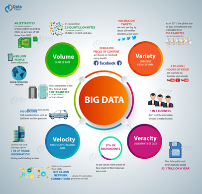

Image on big data example

How big data is managed and processed [150 words max]
Managing and processing big data involves collecting, storing, analyzing, and visualizing vast amounts of information efficiently. Data is first gathered from multiple sources such as social media, sensors, transactions, and online activities. It is then stored in scalable systems like cloud platforms, data warehouses, or distributed databases to handle large volumes. Processing frameworks such as Apache Hadoop and Apache Spark are used to clean, organize, and analyze the data quickly. Advanced analytics techniques, including machine learning and predictive modeling, help uncover trends and patterns that support decision-making. Data visualization tools like Tableau or Power BI transform complex results into interactive charts and dashboards. Effective big data management also includes ensuring data security, quality, and compliance with privacy standards. Together, these processes enable organizations to turn massive datasets into actionable insights that drive innovation, improve performance, and enhance user experiences. - naugthy if you keep this
References
-
Figure 1: Spiceworks (2024) Facets and Elements of Big Data [Online Image]. Available at: https://www.spiceworks.com/tech/big-data/articles/what-is-big-data/ (Accessed: 11 November 2025).